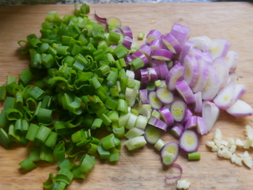

Pollo al verdeo

Descripcion
Hoy le enseñaremos a crear esta deliciosa receta tradicional francesa
solo debe seguir los pasos que se indican a continuacion:
Ingrdientes
- 1 pechuga de pollo grande
- 5 cebollas de verdeo
- 1 diente de ajo
- 1 chorro de vino
- 1/5 de una caldo de gallina
- 100cc. de crema de lache
- Sal, pimienta, aceite
Indicaciones
- Cortar la pechuga en trozos grandes. Calentar el aceite y dorar los trozos de ambos lados. No deben quedar demasiado dorados, apenas.
- Agregar al pollo las cebollas de verdeo, cortadas en rodajas gruesas, y el ajo picado. Cocer a fuego fuerte. Apenas un par de minutos, la cebolla de verdeo no debe ablandarse tanto como en otros sofritos.
- Agregar el chorro de vino y dejar al fuego uno o dos minutos, para que evapore el alcohol.
- Agregar el caldito, la sal, la pimienta y agua hasta cubrir apenas el pollo. Poner a fuego fuerte hasta que hierva, luego bajar el fuego y cocinar, tapado, una media hora.
- Una vez que esté listo, dejar unos minutos para que baje el calor y agregar la crema de leche. Mezclar hasta que la salsa se una. Quedará una salsa cremosa pero liviana. Servir acompañado de arroz como yo, puré, papas o lo que se te ocurra.